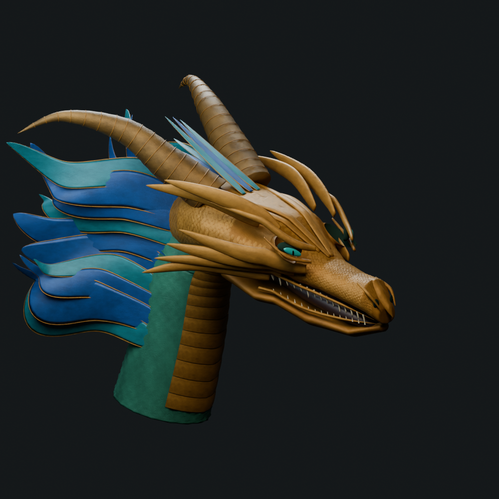

REFERENCE → SCULPT
The face comes first.
Compare the approved artwork with the new head-only 3D study. Look at the muzzle, brow, jaw, cheek plates and horns. This is a work in progress; the reference remains the target.

Revision 02 broadens the skull and cheekbones, brings the eyes forward, lowers the nose crest and reshapes the horns. The skin, facial integration and flowing mane still need refinement. The approved reference remains the target.